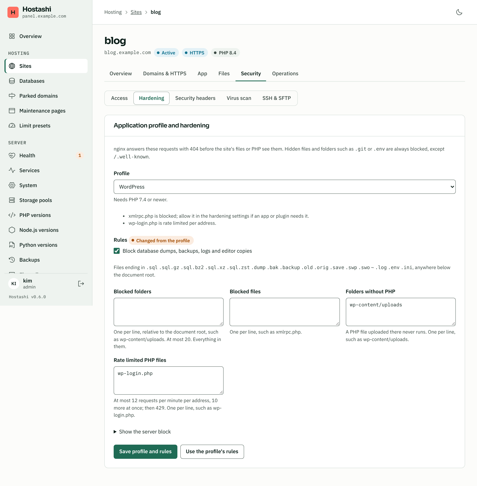
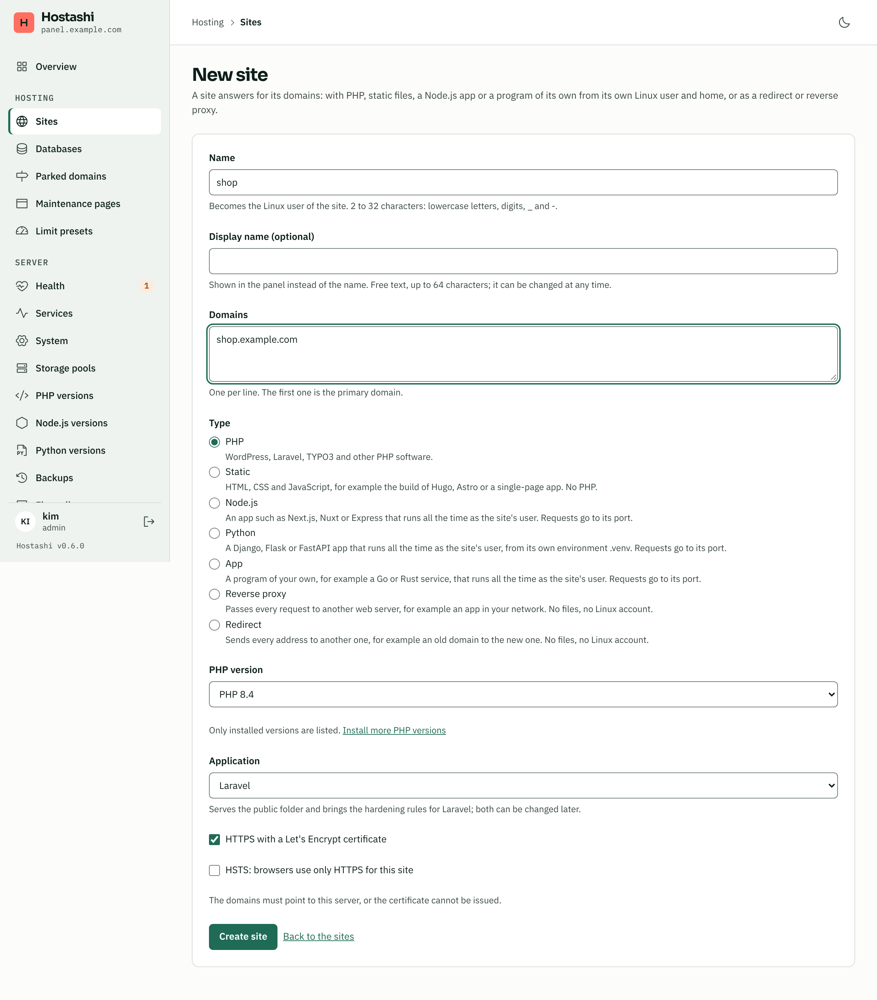
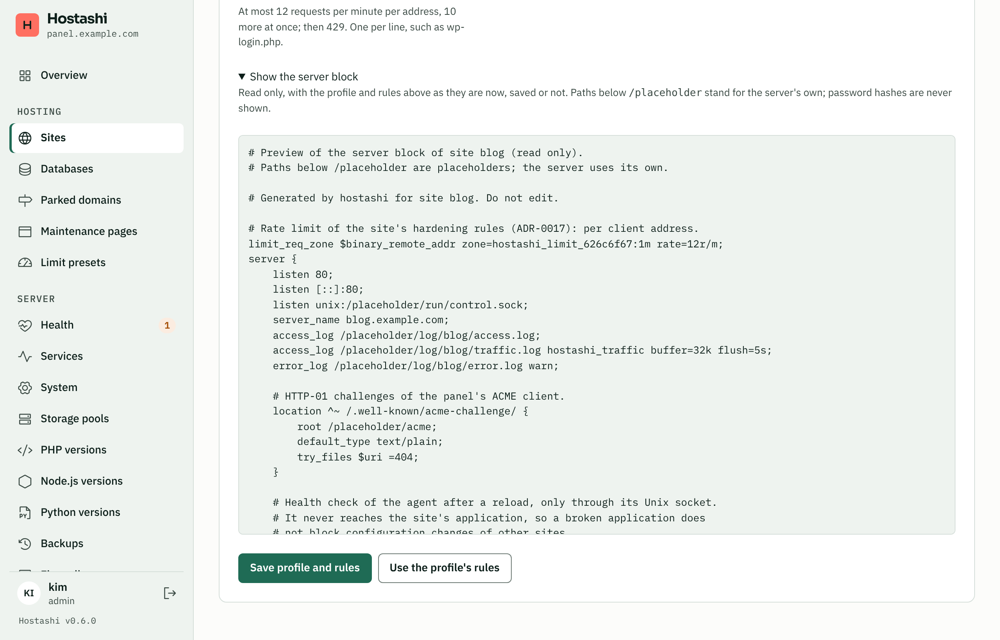
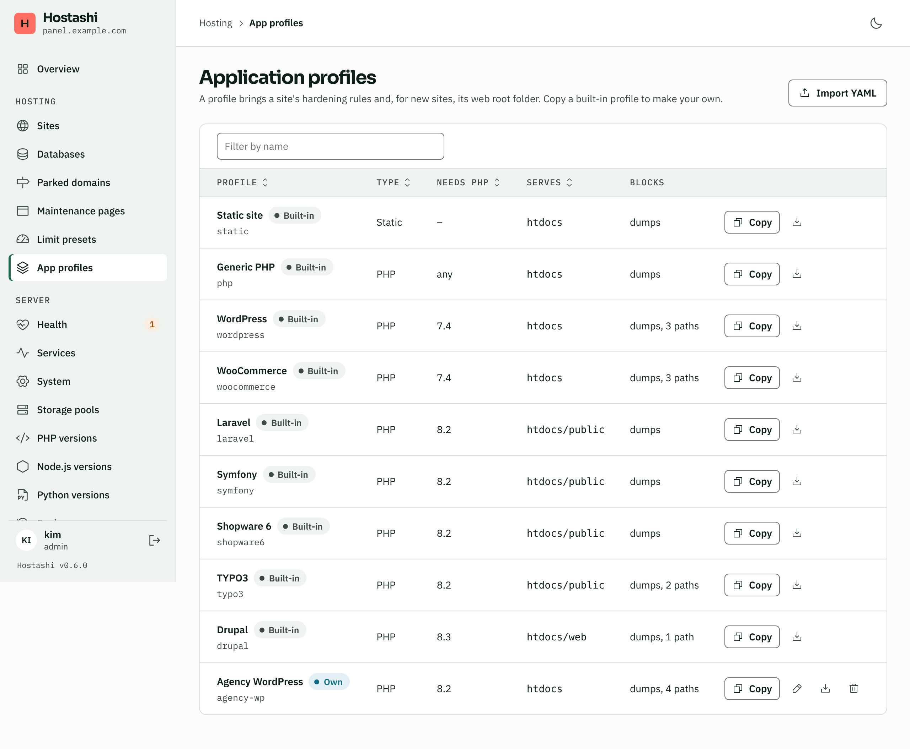
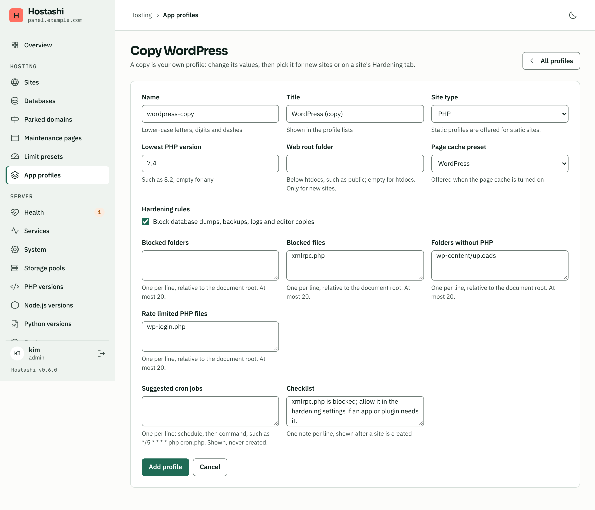
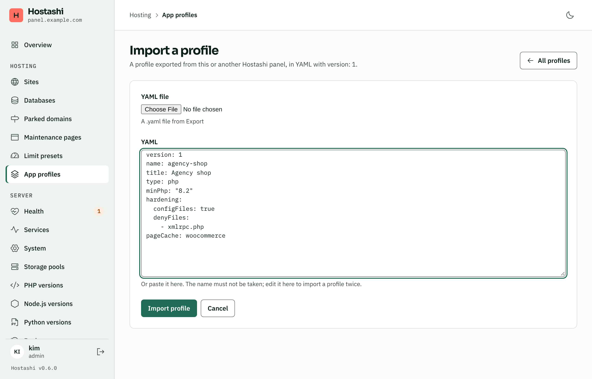
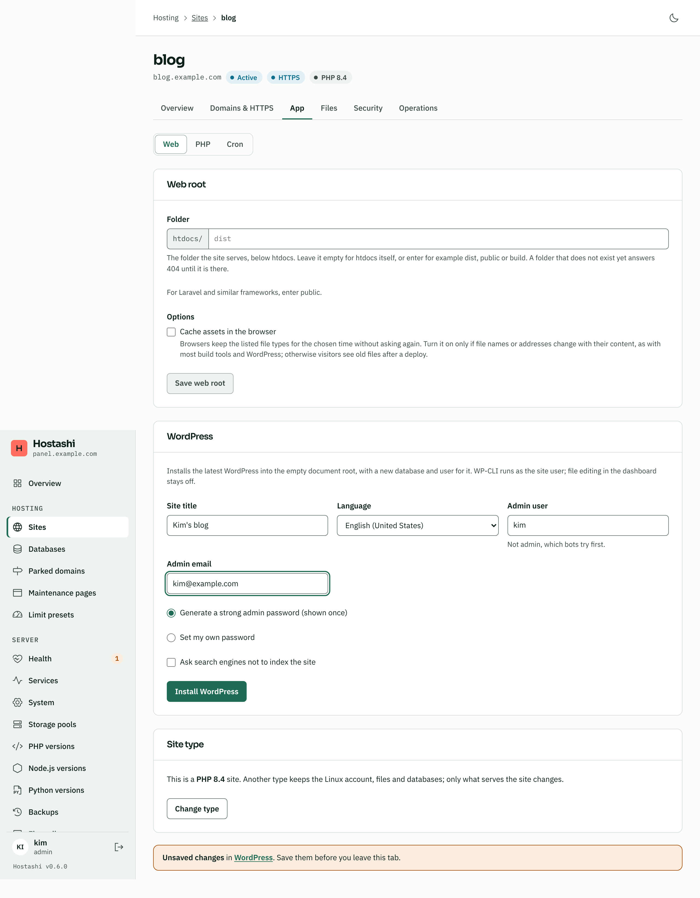
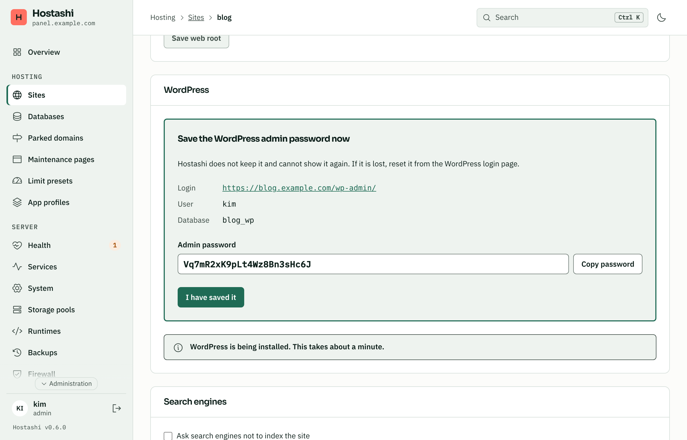
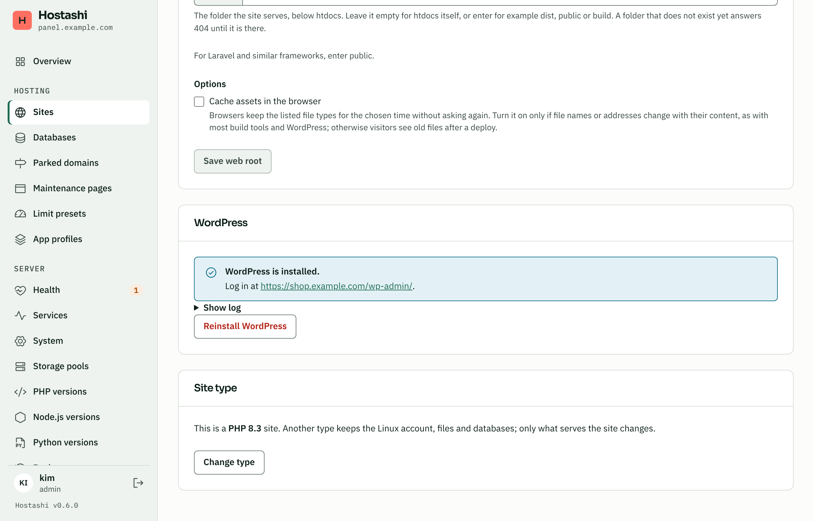
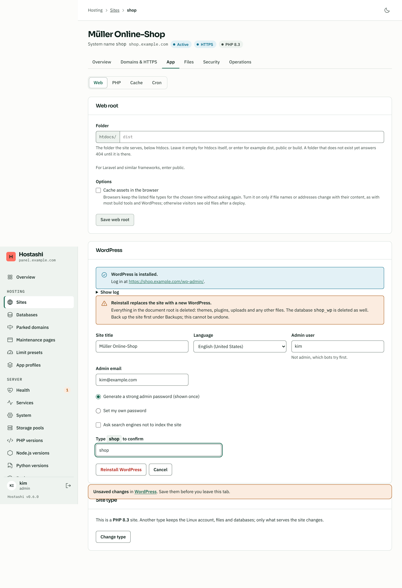

Application profiles and hardening¶
An application profile tells the panel what runs on a static or PHP site, such as WordPress or Laravel. The profile brings hardening rules: nginx answers requests for files that should never be public with 404, before the site's files or PHP see them. You choose the profile when you create a site and can change it later on the site's Security › Hardening tab.
For: everyone who can change the site.

The profiles¶
| Profile | Needs PHP | Serves | Rules besides blocked dumps and backups |
|---|---|---|---|
| Static site | – | htdocs |
none |
| Generic PHP | any | htdocs |
none |
| WordPress | 7.4 | htdocs |
no PHP in wp-content/uploads, xmlrpc.php blocked, wp-login.php rate limited |
| WooCommerce | 7.4 | htdocs |
as WordPress |
| Laravel | 8.2 | htdocs/public |
none |
| Symfony | 8.2 | htdocs/public |
none |
| Shopware 6 | 8.2 | htdocs/public |
none |
| TYPO3 | 8.2 | htdocs/public |
no PHP in fileadmin and typo3temp |
| Drupal | 8.3 | htdocs/web |
no PHP in sites/default/files |
The folder a profile serves only applies to new sites. Changing the profile of an existing site never touches its files or its web root.
Choose a profile for a new site¶
On Hosting → Sites → New site, pick the Application of a PHP site below the PHP version. The panel refuses a PHP version older than the profile needs. Without a choice, a PHP site gets Generic PHP, and a static site always starts with Static site.

Change the profile or its rules¶
- Open the site and go to the Security › Hardening tab.
- Choose a Profile. Its rules fill the form, and its notes appear below it.
- Change the rules if the site needs it, for example clear
xmlrpc.phpfrom Blocked files when the WordPress app or Jetpack needs it. - Click Save profile and rules. nginx uses the new rules right away.
The panel stores only what differs from the profile. When a later Hostashi version changes a profile, a site keeps its own changes and gets the rest. The badge Changed from the profile shows that the site has changes; Use the profile's rules drops them.
See the server block¶
Show the server block below the rules shows the nginx configuration the site gets with the chosen profile and the rules in the form, before you save them. It changes as you edit the form. The panel renders it with the same templates as the server, but it is read only and saves nothing. Paths below /placeholder, such as the web root, the PHP socket and the certificate, stand for the server's own paths. Password protection shows its rules but never the users or their password hashes. Custom snippets that point into the site's home are left out with a note. A site in maintenance or switched off is shown as it is served when it is back online. Everyone who can see the site can open it; the API route is POST /api/v1/sites/{name}/profile/preview.

The rules¶
| Rule | What nginx does |
|---|---|
| Block database dumps, backups, logs and editor copies | 404 for files ending in .sql, .sql.gz, .sql.bz2, .sql.xz, .sql.zst, .dump, .bak, .backup, .old, .orig, .save, .swp, .swo, ~, .log, .env or .ini, anywhere below the web root |
| Blocked folders | 404 for everything in these folders |
| Blocked files | 404 for these files |
| Folders without PHP (PHP sites) | a .php file in these folders never runs, it gets 404; other files are served as before |
| Rate limited PHP files (PHP sites) | at most 12 requests per minute per address, 10 more at once, then 429 |
Paths are relative to the web root, one per line, at most 20 per list, for example wp-content/uploads. They may contain letters, digits, ., _ and -, separated by /.
Hidden files and folders such as .git, .env or .htaccess are always blocked with 404, whatever the profile. /.well-known stays open, so Let's Encrypt and other checks keep working.
Own profiles¶
Admins can make their own profiles, for example a WordPress profile that also blocks readme.html, or a static profile that serves htdocs/dist. An own profile has the same values as a built-in one and no nginx text.
For: admins. Everyone who can create or change a site can choose an own profile.

Copy a profile¶
- Go to Hosting → App profiles.
- Click Copy next to the profile to start from.
- Give the copy a Name (up to 40 lower-case letters, digits and dashes, starting with a letter; built-in names are taken) and a Title.
- Change the values: the site type, the lowest PHP version, the web root folder, the page cache preset, the hardening rules, suggested cron jobs and the checklist.
- Click Add profile.

Own profiles appear after the built-in ones on New site and on the site's Security › Hardening tab. Static profiles are offered for static sites.
Change or delete an own profile¶
Change saves new values. Sites that use the profile get its new hardening rules right away and keep their own changes. The web root folder only applies to sites created afterwards. The name cannot change, and the site type cannot change while sites use the profile.
Delete works only while no site uses the profile; the panel names the sites that still do. Give them another profile on their Hardening tab first. Built-in profiles cannot be changed or deleted.
Every change of an own profile is in the audit log as profile.create, profile.import, profile.update or profile.delete.
Export and import as YAML¶
Export downloads a profile, built-in or own, as hostashi-profile-<name>.yaml:
version: 1
name: agency-wp
title: Agency WordPress
type: php
minPhp: "8.2"
hardening:
configFiles: true
noPhpDirs:
- wp-content/uploads
denyFiles:
- xmlrpc.php
- readme.html
limitFiles:
- wp-login.php
pageCache: wordpress
checklist:
- Install the agency's plugin set.
To import, click Import YAML, choose the file or paste it, and click Import profile. The panel refuses a file without version: 1, with fields it does not know (such as nginx text), with more than one document or larger than 64 KiB, and every value it would refuse in the form. The name must not be taken: edit it in the text field to import a profile a second time.

From the command line, the same works through hostashi api; a token needs the scope settings:write to change profiles:
hostashi api sites export-profile agency-wp > agency-wp.yaml
jq -Rs '{yaml: .}' agency-wp.yaml | hostashi api sites import-profile -d -
Own profiles do not carry nginx snippets. For extra nginx rules, an admin adds a custom snippet on the site's Operations › nginx tab.
Install WordPress¶
Any active PHP site can get WordPress in one step. The panel creates a database and its user, then WP-CLI downloads and installs WordPress as the site's user. The PHP site's own PHP version runs it.
- Open the site and go to the App › Web tab.
- Under WordPress, fill in the site title, the language, the admin user and the admin email. Do not call the admin user
admin: bots try that name first. - Leave Generate a strong admin password on, or set your own of 12 to 128 characters.
- Click Install WordPress.

The web root must be empty; WordPress installs only into an empty folder. The database is called <site>_wp, with - in the site name turned into _; if that name is taken, the panel uses <site>_wp2 and so on. It counts for the site's databases like any other, see Databases.
A generated password is shown once, together with the login address, the user and the database. Copy it before you click I have saved it; the panel does not keep it. A lost password can be reset from the WordPress login page.

The install takes about a minute. The card shows its progress and, at the end, the log of WP-CLI. The log stays readable afterwards under Operations › Logs › WordPress install, see Site logs. A site whose profile was Generic PHP gets the WordPress profile. The installed WordPress has file editing in the dashboard switched off (DISALLOW_FILE_EDIT).
After the install, a Shell key gives you the wp command for WP-CLI on the site, with the site's PHP version.
When the install fails¶
The card shows the error and the log. The database stays. If the web root is empty, the form is there again; otherwise empty it in the file manager or over SSH, or use Reinstall WordPress. Delete the database on the Databases tab if you no longer need it.
Reinstall WordPress¶
The card looks at the web root itself. It says WordPress is installed when it finds wp-config.php or wp-includes/version.php, also for a WordPress you installed by hand. If you delete WordPress in the file manager, the install form comes back.

Reinstall WordPress replaces everything in the web root with a new WordPress:
- Back up the site first, see Backups. A reinstall cannot be undone.
- Click Reinstall WordPress, fill in the form as for a new install, and type the site's name to confirm.
- Click Reinstall WordPress again.

The install run empties the web root first, as the site's user, then installs WordPress into a new database (<site>_wp2 if <site>_wp is taken). Themes, plugins, uploads and every other file in the web root are gone. The old WordPress database, the one wp-config.php names, is deleted once the install started, but only if it belongs to the site and has a quick install's name (<site>_wp to <site>_wp9). Any other database stays; delete it on the Databases tab if you no longer need it.